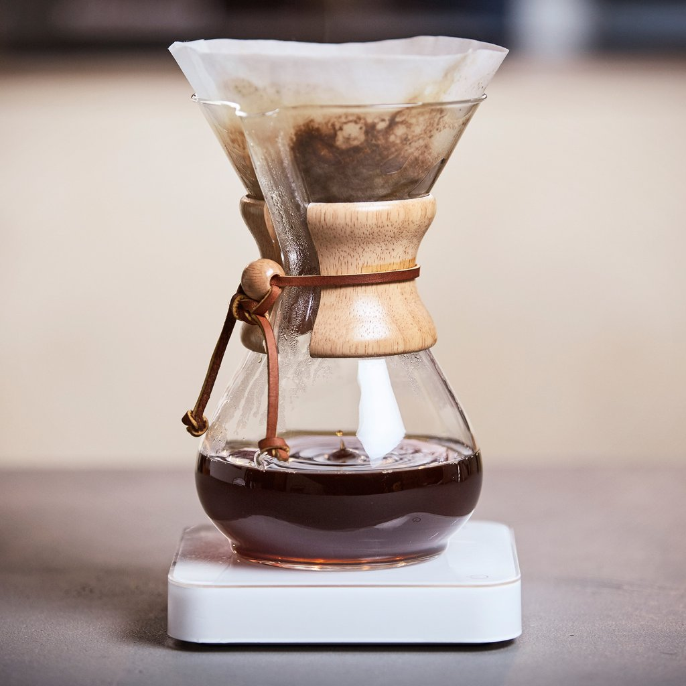
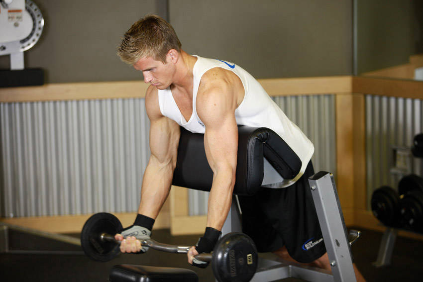
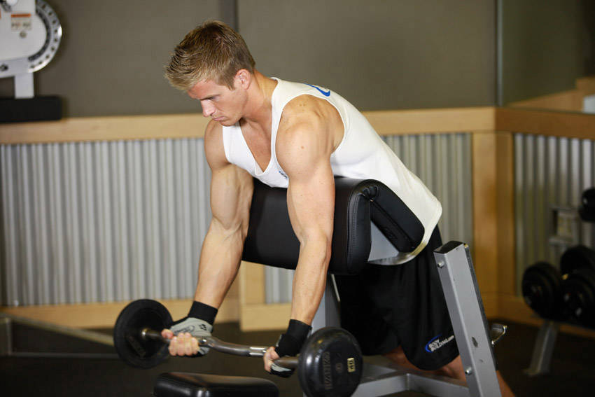

Kahve, Kilo Vermede Yardımcı Olabilir mi?
Dünya'nın en sevdiği sabah içeceği aynı zamanda en büyük sağlık sorunlarından biri olan obezite ile savaşmaya yardımcı olabilir mi?
⊁1
Kahvenin Sırrı
Kahve , insan vücudunda bulunan "kahverengi yağ dokusunu, termojenez adı verilen bir işlemle yakar.
Nottingham Üniversitesi'nden çalışma lideri Michael Symonds, "Bu, insanlarda bir fincan kahve'nin kahverengi yağ fonksiyonlarımızı doğrudan etkileyebileceğini gösteren ilk çalışmadır." Dedi.
Bir üniversite haber bülteninde " Obezite toplum için büyük bir sağlık sorunudur ve ayrıca diyabet hastalığı çok hızlı arttığından , sonuçlarınızın potansiyel etkileri oldukça büyüktür. Kahve, kahverengi yağ, yakımına yardımcı olarak obezite sorununun çözümünün bir parçası olabilir" dedi.
Ancak bir ABD'li obezite ve beslenme uzmanı, kahveyi bir diyetisyenin en iyi arkadaşı olarak etiketlemek için henüz çok erken olduğunu söyledi .
Uzman diyetisyen Sharon Zarabi, "Genellikle termojenik özellikler büyük kilolardan düşme konusunda çok etkili değildir dedi. New York City'deki Lenox Hill Hastanesi'nde bariatri programını yönetiyor.
Symonds'un ekibinin açıkladığı gibi, termojenik kahverengi yağın sadece bebeklerde ve kış uykusunda bulunan hayvanlarda var olduğu düşünülüyordu.
Ancak son yıllarda yetişkinlerde keşfedildi. Vücudun aşırı kaloriyi depoladığı beyaz yağ hücrelerinden farklıdır.
Symonds, “Kahverengi yağ, vücudunuzdaki diğer yağlardan farklı şekilde çalışıyor ve sıklıkla soğuğa yanıt olarak şeker ve yağ yakıp ısı üretiyor” dedi. Bu nedenle, "aktivitesini arttırmak, kan şekeri kontrolünü arttırmanın yanı sıra, kan lipit [ kolesterol ] seviyelerini de arttırır ve yanmış olan kaloriler kilo kaybına yardımcı olur."
Fakat kahverengi yağ, yediğiniz veya içtiğiniz bir şeyle kalori yakma aktivitesine neden olabilir mi?
Bunu bulmak için İngiliz ekibi kök kafeinli çalışmaları kullanarak önce kafeinin işe yarayıp yaramayacağını gördü. Belli bir dozda deney yaptı.

⊁2
Devam Ediyor.
Symonds, "Bir kahveyi içtikten hemen sonra, kahverengi yağın ısındığını görmek için birini görüntüleyebildik" dedi.
"Sonuçlar olumluydu," dedi, bir sonraki adım kahvenin hangi bileşeninin - belki de kafeinin - kahverengi yağı harekete geçirdiğini bulmak .
Symonds, ekibi ayrıca "etkinin benzer olup olmadığını test etmek için kafein takviyelerine bakıyor" dedi. “Bundan hangi bileşenin sorumlu olduğunu onayladığımızda, potansiyel olarak kilo yönetimi rejiminin bir parçası olarak veya diyabetin önlenmesine yardımcı olmak için [a] glikoz düzenleme programının bir parçası olarak kullanılabilir .”
Ancak Zarabi, diyet yapanların kahveyi kilo kaybı için sihirli bir iksir olarak görmemesi gerektiğini söyledi.
“Hâlâ kahveyi sabahları zihin açıcı ve keyif verici bir içecek olarak tavsiye ediyorum, ama kesinlikle kilo vermenize direk yardımcı olmuyor.
Zarabi, egzersizin kalori yakmanın en iyi ve en etkili yolu olmaya devam ediyor.
Ancak kilo vermek için kahve içmeyi seçerseniz, sade içmeyi tavsiye ediyorum.
Çalışma 24 Haziran'da Scientific Reports dergisinde yayımlandı .


 
